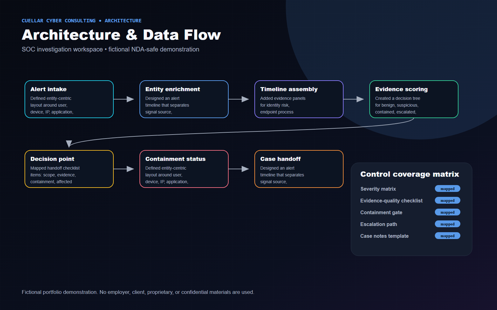
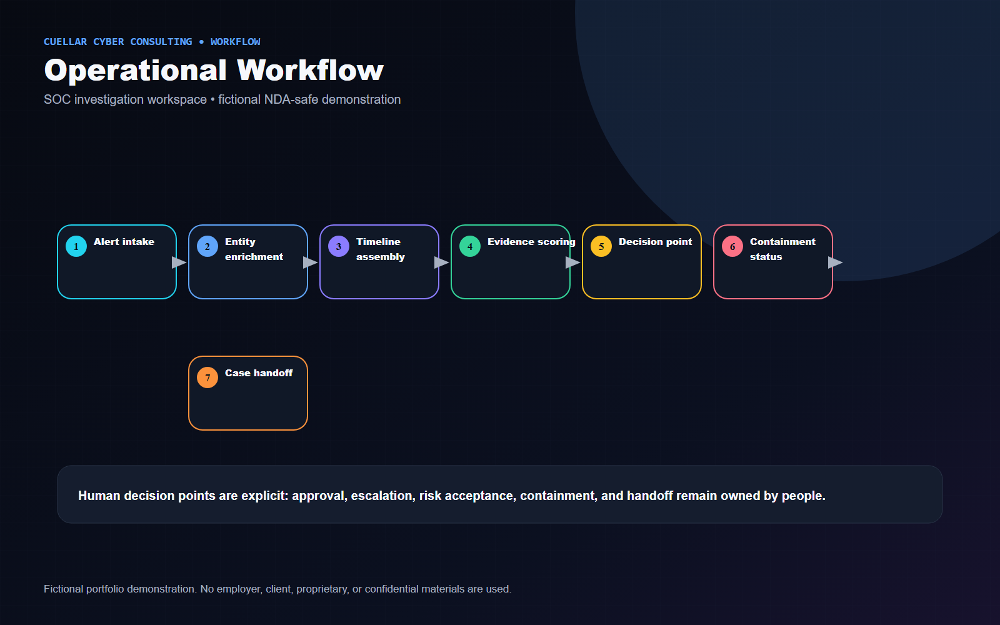
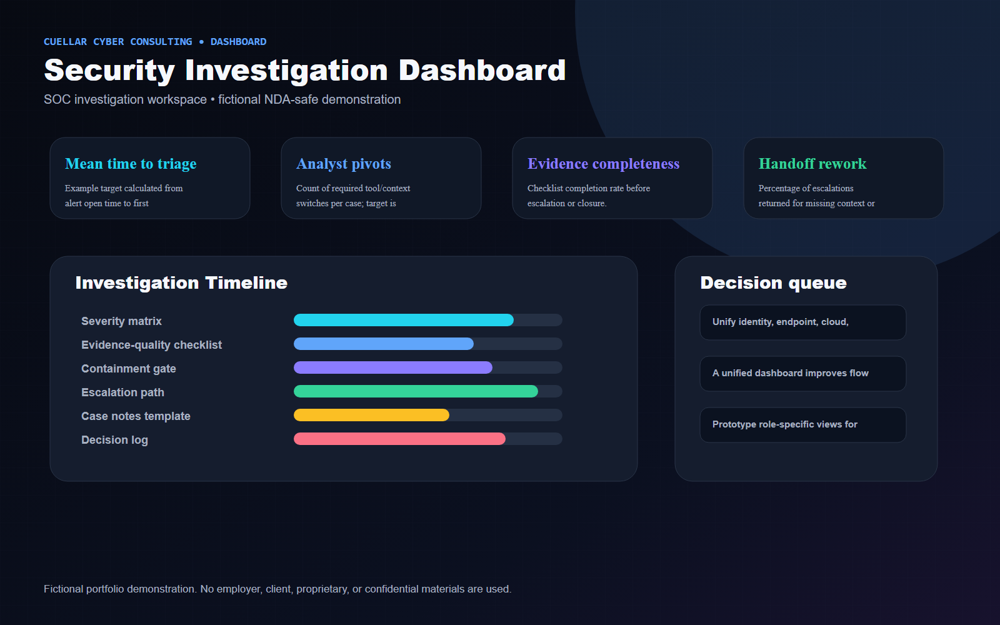

Executive Summary
Modeled a single investigation workspace that reduces tool switching while preserving analyst judgment, escalation criteria, and evidence quality.
Fictional Client Profile
Meridian Health Group, a fictional healthcare services organization with distributed users, cloud applications, and a small SOC team.
Client Challenge and Business Risk
Client situation
A fictional enterprise SOC had analysts pivoting across identity, endpoint, cloud, network, and collaboration tools during time-sensitive investigations.
Business risk
Fragmented evidence increases triage time, inconsistent documentation, missed containment status, and avoidable handoff friction between Tier 1, Tier 2, incident response, and leadership.
Project objectives
- Unify identity, endpoint, cloud, network, email/collaboration, and alert chronology context.
- Expose analyst decision points without implying the dashboard replaces human judgment.
- Create severity and escalation logic tied to evidence strength and blast radius.
- Standardize investigation notes, containment status, and case handoff.
Constraints and assumptions
- All incidents, entities, screenshots, and metrics are fictional.
- Dashboard design assumes data is already available from authorized enterprise tools.
- The mockup avoids proprietary detection names, real case data, or employer-specific workflows.
Technical Approach
- Defined entity-centric layout around user, device, IP, application, and alert objects.
- Designed an alert timeline that separates signal source, confidence, mapped behavior, and supporting evidence.
- Added evidence panels for identity risk, endpoint process context, cloud activity, network indicators, and collaboration/email clues.
- Created a decision tree for benign, suspicious, contained, escalated, and executive-notifiable outcomes.
- Mapped handoff checklist items: scope, evidence, containment, affected assets, open questions, owner, and next action.
Architecture Diagram

Operational Workflow

Security Controls
- Severity matrix
- Evidence-quality checklist
- Containment gate
- Escalation path
- Case notes template
- Decision log
- Chain-of-custody fields
Technologies and Frameworks
Deliverables
- Investigation dashboard mockup
- Entity relationship view
- Alert timeline visual
- Evidence panel design
- Investigation decision tree
- Case severity matrix
- Handoff checklist
- Escalation summary

Business Outcomes and Success Measures
Metrics are labeled as illustrative example targets or proposed success measures. They are not real accomplishments.
| Measure | How it would be interpreted |
|---|---|
| Mean time to triage | Example target calculated from alert open time to first documented disposition. |
| Analyst pivots | Count of required tool/context switches per case; target is reduction, not elimination. |
| Evidence completeness | Checklist completion rate before escalation or closure. |
| Handoff rework | Percentage of escalations returned for missing context or unclear decision rationale. |
Tradeoffs and Design Decisions
- A unified dashboard improves flow but cannot replace source-tool validation for high-impact containment.
- Too much evidence creates cognitive overload; the design prioritizes progressive disclosure and next-best-action prompts.
- Risk scoring must be explainable so analysts can challenge it.
Lessons Learned
- SOC dashboard value comes from workflow design, not simply placing more widgets on a screen.
- The strongest investigation views make missing context obvious and document why a decision was made.
Potential Next Phase
Prototype role-specific views for Tier 1 triage, Tier 2 investigation, and incident commander readout.
Fictional and NDA-Safe Disclaimer
Fictional portfolio demonstration. No employer, client, proprietary, or confidential materials are used. The content does not include or imitate employer dashboards, logos, terminology, real data, real incident details, internal detections, internal code, or confidential workflows.